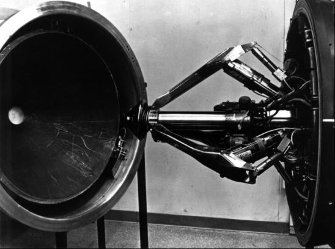

NASA had scheduled six missions in 1968 but had found only four necessary (see Chapter 10) (see Chapter 11). The agency could also omit a flight in 1969, if the crew of the G mission listed for 15 July could touch down, stay awhile, and leave the moon safely. The intervals between following launches might then be as long as six months to assimilate more of what had been learned before going on to the next mission. But until the first landing took place, Mueller and his management council still planned to launch a mission every two and a half months.2
NASA Headquarters continued to emphasize schedules, even while worrying lest something be overlooked in meeting the deadline. To avert this possibility, Washington kept adding specialized administrative layers, and Gilruth shortly complained to Mueller that too many Headquarters review teams were investigating one thing or another about the mission.3 In addition to administrative actions, two technical suggestions surfaced at Headquarters. The first, tinged with conservatism, was to land an unmanned lunar module on the moon before a manned vehicle touched down. Mueller told Acting Administrator Thomas Paine that modifying the lander for unmanned flight would take too long and would, in the end, give very little in return for the costs in time and money. The second idea, proposed by Apollo Program Director Samuel Phillips, was to ship the command and service modules to the Cape already assembled and mated, rather than separately. Houston's Apollo Spacecraft Program Manager George Low informed Phillips it would save time at Kennedy but would add time at Downey. It would also cost an extra million dollars.4
Good reasoning lay behind this paradox of both hurrying and holding back. Ever-present desk and wall calendars kept reminding the managers that time was running out, yet they had to guard against another terrible tragedy in the program. Two areas, however, were viewed with satisfaction - program costs and spacecraft weights. Both North American and Grumman were operating within fiscal 1969 financial limits. And, although fire-related changes in the command and service modules had increased the weight significantly, NASA and North American had reversed this trend in the latter half of 1967. In the succeeding months, the command module's bulk had actually been whittled down. Lunar module weight, however, did not stabilize until mid-1968, and that machine still had some lingering technical troubles.5
One of the more exasperating problems was the electrical wiring in LM-3. Kennedy Space Center engineers had complained about the vehicle ever since its arrival in Florida in June 1968. In late January 1969, Low asked Martin L. Raines, reliability and quality assurance chief in Houston, to find out just how bad the wiring was. Raines told the Apollo manager that he had found hundreds of splices in the vehicle, but it could still fly safely. Most of the broken wiring, Raines said, was caused by the low tensile strength of the annealed copper wire. The wiring in LM-4, ticketed for Apollo 10, should cause fewer problems, since a high-strength copper alloy would be used.6
Another recurring lander ailment was stress corrosion, or metal cracking. Grumman had no structural failures during testing, but the cracks worried both NASA and contractor engineers. A number of fittings were replaced in LMs 3, 4, and 5; by the end of January 1969, the vehicles for Apollo 9 and 10 were considered ready for launching. If problems arose later, more fittings could be changed on LM-5 as it passed through its testing program.7
Operational as well as component problems raised some issues during this period. For example, what would happen to the electrical systems in the spacecraft when the two vehicles docked? Ground tests at Downey and the Cape revealed that there would be little electromagnetic interference. A larger question centered on flying the lunar module after the vehicles separated. About a year before the Apollo 9 mission, astronaut Charles Conrad had commented to Bill Tindall, a leading Houston mission planner, that the lander would be hard to handle when a large amount of the propellant had been used and the descent stage had been dropped off. At a flight program review in October 1968, Phillips asked about the problems of steering the lightweight ascent stage manually. Gilruth directed Warren J. North and Donald C. Cheatham to find out what the difficulties would be. North and Cheatham reported that docking would require precise control but that this and other guidance tasks had been successfully simulated at Bethpage, in Houston, and at Langley.8

Spacecraft docking devices: the command module probe and docking ring at right; the lunar module drogue at left.
Perhaps the biggest concern before Apollo 9 was the docking maneuver. A 1972 report revealed that there was little confidence in the docking system in early 1969. At a January program review, Phillips said that problems encountered during probe and drogue testing worried him. On several occasions, when the command module's extendable probe had nuzzled into the lander's funnel-shaped drogue, the capture latches had failed to engage. In other tests, they had only partially caught, raising the specter of "jack-knifing" and possible damage to one of the spacecraft, probably the lunar module. Phillips was also concerned that the sharp edges on the probe might scar the drogue when the craft were reeled together and prevent airtight sealing of the 12 latches on the command module docking ring. Low asked his deputy, Kenneth Kleinknecht, to investigate. On 14 January, Kleinknecht and six others* from the Manned Spacecraft Center went to Downey to see what was being done about correcting 17 known problem areas. North American personnel responded to each criticism to the satisfaction of the team.9
Although the spacecraft occupied the center ring of concern, Marshall Space Flight Center focused on a nagging item a little lower in the stack. Borman and his crew aboard Apollo 8 had been grateful when the second (S-II) stage of the Saturn V finished thrusting and dropped away. Although the launch had been neither particularly painful nor dangerous, it had shaken them up and bounced them about. Launch vehicle engineers concluded that the shaking had been a form of pogo, since the pulsing engines had increased the vibrations. The Marshall and Rocketdyne troops pounced on the problem, trying out various fuel-feeding combinations through the propellant valve. Another suggested cure was to increase the pressure to the inlet of the oxidizer pump. Time was too short for tests of this method before the scheduled launch, and there were some objections; but the managers decided to raise the pressure in the propellant tanks a little and hope for the best. The crew on Apollo 9 might very well encounter just as much pogo as the crew of the preceding flight, but that was not enough to delay the launch.10
* The team members were Maxime A. Faget, Engineering and Development; Joseph N. Kotanchik, Structures and Mechanics; Christopher C. Kraft, Jr., Flight Operations; Raines, Reliability and Quality Assurance; Donald K. Slayton, Flight Crew Operations; and Harmon L. Brendle (secretary), the Apollo Spacecraft Program Office.
2. Mueller to Gilruth, Wernher von Braun, MSFC Dir., and Kurt H. Debus, KSC Dir., 14 Feb. 1969.
3. Gilruth to Mueller, 18 Nov. 1968.
4. Robert L. Wagner, NASA routing slip, to Lt. Gen. Samuel C. Phillips, 11 Feb. 1969, with att., Mueller draft memo to Actg. Admin., NASA, "Unmanned LM Landing," n.d.; George M. Low, MSC, to NASA Hq., Attn.: Phillips, "Shipment of command and service modules in a mated configuration," 2 Oct. 1968.
5. Phillips to Low, "Apollo Program Fiscal Year 1969 Costs," 11 Feb. 1969; Low to Phillips, 5 April 1969; Caldwell C. Johnson to Low, "Apollo weight growth," 8 April 1969.
6. Low to Martin L. Raines, "LM-3 wiring problems," 23 Jan. 1969; Raines to Mgr., ASPO, subj, as above, 5 Feb. 1969.
7. [Grumman], "Statement of Stress Corrosion," 29 Jan. 1969; NASA, "LM Fittings Changed," news release 69-24, 31 Jan. 1969.
8. Low to NASA Hq., Attn.: Phillips, "Response to Block II DCR [Design Certification Review] and LM-3 DCR action items concerning CSM/LM EMC (electromagnetic compatibility)," 26 Oct. 1968; Gilruth to DCR Board Members, "Spacecraft electromagnetic compatibility," 29 Jan. 1969, with enc., B. D. Cooperstein and R. H. Parry, "Apollo CSM/LM Computerized Electromagnetic Compatibility Analysis," TRW 11176-H111-RO-OO, 21 Jan. 1969; Howard W. Tindall, Jr., memo, "Light weight LM attitude control is too sporty," 7 Dec. 1967; Gilruth to NASA Hq., Attn.: Phillips, "Manual control of the light Lunar Module ascent configuration," 27 Nov. 1968, with encs.; Phillips to Gilruth, subj. as above, 16 Dec. 1968; Chester A. Vaughan et al., "Lunar Module Reaction Control System," Apollo Experience Report (AER) NASA Technical Note (TN) S-315 (MSC-04567), review copy, December 1971.
9. Robert D. Langley, "The Docking System," AER TN S-325 (MSC-05137), review copy, March 1972, p. 19; North American Space Div., PR Dept., Apollo Spacecraft News Reference (Downey, Calif., rev. ed., 1969), p. 119; Low TWX to North American and Grumman, Attn.: Milton I. Drucker and Robert L. Tripp, "Pre-FRR [Flight Readiness Review] Docking Probe Review Board," 8 Jan. 1969; Kenneth S. Kleinknecht memo, subj. as above, 8 Jan. 1969; Aaron Cohen memo, "CSM 104 Drogue and Probe Review," 17 Jan. 1969; OMSF Report to the Admin., NASA, signed by Mueller (hereafter cited as Mueller Report), 13 Jan. 1969; Low to Phillips, 28 Jan. 1969, with enc., Harmon L. Brendle, secy., minutes of meeting, Pre-FRR Review of the Drogue and Probe, CSM 104, 15 Jan. 1969.
10. Donald F. Seaton, Jr., Apollo Program Weekly Status Reports, OMSF, 24 Jan. and 14 Feb. 1969; Mueller Report, 27 Jan. 1969; David B. Pendley to Mgr., ASPO, "S-II stage oscillation," 31 Jan. 1969, and "AS-504 Pre-Flight Review at MSFC on January 29, 1969," 31 Jan. 1969; Donald C. Wade, telephone interview, 4 Feb. 1976; Sally D. Gates, NASA routing slip, to Wade, with Wade's annotation, 4 Feb. 1976.